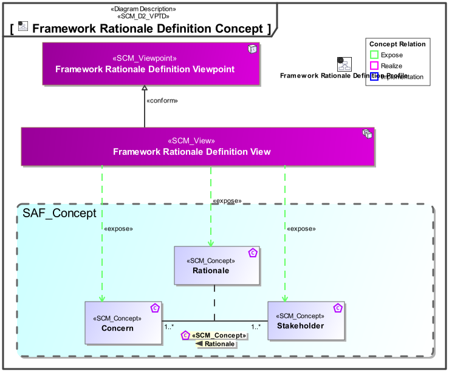
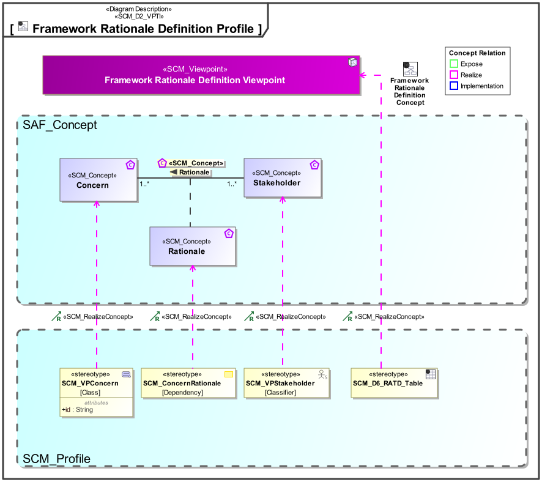

D6_RATD Framework Rationale Definition Viewpoint
| Domain | Aspect | Maturity |
|---|---|---|
| SAF Development | Requirement |

The Framework Rationale Viewpoint defines the relationship between Stakeholders and their Concerns in the context of Development of SAF. The Rationale formulates why a Stakeholder has a certain concern.
The viewpoint is intended to be used for development or extension of the SAF.
The Viewpoint supports the definition of “Stakeholders and concerns”, and “Specification of an architecture description framework” as defined in ISO42010:2022
A matrix featuring SCM_VPStakeholder elements and SCM_VPConcern elements as rows and columns, and a marking in cells where a SCM_ConcernRationale connects a stakeholder with a concern.
A table featuring the SCM_ConcernRationales that connect SCM_VPStakeholders and SCM_VPConcerns, and the rationales documentation.
The following Stereotypes / Model Elements are used in the Viewpoint:
The Diagram shows the concepts exposed by the viewpoint, and related concepts if necessary.

| Concept | Documentation |
|---|---|
| Concern | Specifies an information need that a stakeholder of the SAF needs to be satisfied within an MBSE approach using SAF. |
| Rationale | Specifies why a stakeholder has a concern. Typically that has to do with the work a stakeholder has to do within an MBSE approach. |
| Stakeholder | specifies someone (typically a role) having an information need within an MBSE approach. |
The Diagram shows the implementation of exposed concepts.

| Concept | Realization |
|---|---|
| Concern | SCM_VPConcern |
| Rationale | SCM_ConcernRationale |
| Stakeholder | SCM_VPStakeholder |